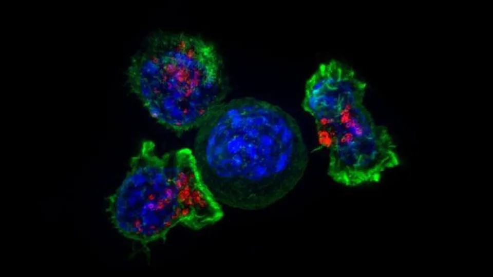
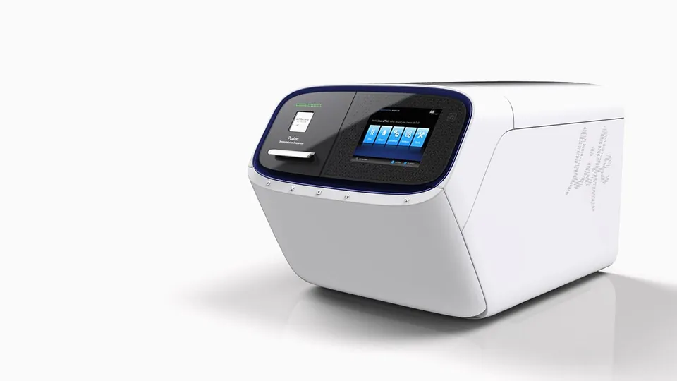

Ultima Genomics wins UK Biobank immune study: UG200 to profile 80,000 immune systems for an AI-scale dataset
- Who: <b>Ultima Genomics</b> (Fremont, Calif.) — UG200™ Sequencing Platform; partners <b>IMU Biosciences</b>, <b>UK Biobank</b> and <b>Waters Corporation</b>.
- What: large-scale <b>single-cell immune profiling</b> study announced <b>October 19, 2026</b>, explicitly producing a <b>foundational dataset for AI</b>.
- Scale: <b>80,000 blood samples</b> initially, with ambition to expand across the full <b>500,000-participant</b> UK Biobank cohort; project begins in <b>2026</b>.
- Data volume: <b>>100 million immune data points per sample</b> — roughly <b>8 trillion</b> data points across the initial cohort.
- Technology: IMU HD Immunology + Waters <b>BD FACSDiscover</b> Cell Analyzer + <b>BD Rhapsody</b> single-cell multiomics; UG200 sequencer <b>launched February 2026</b>, now shipping broadly.
- Track record: Ultima was already selected as the sequencing tech for the <b>600,000-sample</b> UK Biobank Pharma Proteomics Project.
- Access: data returned to UK Biobank over time, available to <b>approved researchers</b> under established access procedures.
Ultima Genomics' UG200™ Sequencing Platform has been selected to power one of the most ambitious immune-profiling efforts ever attempted: a study with IMU Biosciences and UK Biobank that will generate single-cell immune profiles from 80,000 blood samples and turn them into a foundational dataset for AI. Announced October 19, the project aims to produce the most detailed picture of the human immune system assembled at scale — and then hand that data to the world's largest biomedical research community.
An 80,000-sample starting point
The study combines IMU's High Definition (HD) Immunology platform with Waters Corporation's BD FACSDiscover™ Cell Analyzer and BD Rhapsody™ single-cell multiomics platforms; Ultima's UG200 produces the sequencing readouts. The initial cohort is 80,000 UK Biobank blood samples, with an stated ambition to expand profiling across the biobank's full 500,000-participant cohort. The project begins in 2026.
That immune data lands on top of an already enormous stack: UK Biobank holds de-identified genomic, imaging, clinical and lifestyle data from half a million UK volunteers, used by 22,000+ researchers in 60+ countries and behind 18,000+ peer-reviewed papers. Over time, the new immune profiles will be returned to UK Biobank and made available to approved researchers studying how immune variation relates to disease risk, progression, treatment response and long-term health outcomes.

Why the cost curve matters
None of this is viable unless sequencing is cheap enough to run at population scale. That is Ultima's whole pitch: the UG200, launched in February 2026 to select early-access sites and now shipping broadly, was validated to perform well with the BD Rhapsody platform and to deliver the quality, low cost and scale the project demands. Ultima says the pairing makes sequencing-intensive single-cell multiomics economically viable at population scale — studies that were previously impractical.
"Understanding the immune system at population scale demands sequencing that is high-throughput, high-quality, and at extremely low cost to make a study of this ambition viable," said Ultima CEO Gilad Almogy in the announcement.
An AI-scale data layer
IMU says it will generate more than 100 million immune data points from each sample. Multiply that across the initial cohort and you are looking at roughly 8 trillion data points — a dataset explicitly designed as AI training fuel, not just a research result. The press release frames the collaboration as generating immune data "at the scale, reproducibility, and resolution needed for both broad biomedical research and future immune-prediction studies."

This is also a repeat booking. Ultima was already selected as the sequencing technology for the 600,000-sample UK Biobank Pharma Proteomics Project — so the immune study is a second foundational-data layer for AI on the same platform. The pattern is clear: whoever owns the cheapest sequencing chemistry keeps winning the biobank-scale data-generation contracts, and those contracts are where the training data for the next generation of biomedical AI is being assembled.
Sources: Ultima Genomics via PR Newswire, Unite.AI.
Frequently asked questions
Will the study's data be available to researchers?
Yes — over time the data will be returned to UK Biobank and made available to approved researchers under the biobank's established access procedures, to study how immune variation relates to disease risk, progression, treatment response and long-term health outcomes.
Why was Ultima's UG200 picked?
As part of the selection process the UG200 was validated to have excellent performance with the BD Rhapsody single-cell platform, and to provide the quality, low cost and scale the project needs. Ultima says the pairing makes sequencing-intensive single-cell multiomics economically viable at population scale. The platform launched in February 2026 and is now shipping broadly.
How does this connect to the UK Biobank proteomics project?
Ultima was already selected as the sequencing technology for the 600,000-sample UK Biobank Pharma Proteomics Project. The immune study is a second foundational-data layer — immune profiling instead of proteins — built on the same low-cost sequencing platform.